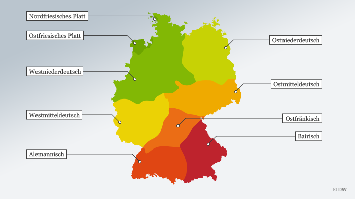
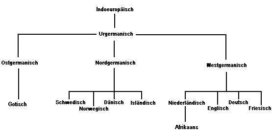

14 Deutsch: Geschichte und Typologie
| Themen | Deutsche Sprachfamilie, Sprachwandel und Einflüsse von Nachbarsprachen; deutsche Dialekte |
| Lernziele | Sie sind in der Lage, das Deutsche in der Indogermanischen Sprachfamilie zu verorten und Beispiele für typische Merkmale zu nennen. Sie habe eine linguistisch reflektierte Meinung zum Sprachwandel erworben und können sich in der Debatte um fremdsprachliche Einflüsse auf das Deutsche positionieren. Sie können deutsche Standardsprache von deutschen Dialekten unterscheiden und sich über sprachliche und soziale Unterschiede äußern. |
Betrachten Sie die Karte der deutschen Dialekte und hören Sie einige Beispiele aus dem Dialekt-Atlas des IDS an. Welche Dialekte können Sie am besten verstehen?

Versuchen Sie, folgende Wörter aus dem Berliner Dialekt ihrer Bedeutung zuzuordnen. Hören Sie dabei auch die Aussprache und sprechen Sie nach.
| Asche | 1 | a | stark, sehr |
| Ast | 2 | b | Angeber |
| Bammel haben | 3 | c | gucken, schauen |
| Fatzke | 4 | d | Geld |
| Großkotz | 5 | e | große Füße |
| jehörich | 6 | f | schwierige Situation |
| kieken | 7 | g | gleichgültig |
| meschugge | 8 | h | verrückt |
| Quadratlatschen | 9 | i | sich köstlich amüsieren |
| Schlamassel | 10 | j | eitler, aufgeblasener, arroganter Mensch |
| schnuppe | 11 | k | vor etwas Angst haben |
Bearbeiten Sie das Arbeitsblatt zum Thema Dialekte. Das benötigte Video finden Sie hier:
Sprechen Sie auch einen Dialekt? In welchen Situationen benutzen sie Ihren Dialekt und wieso? Tauschen Sie sich in der Gruppe aus.
Pause
Die historisch-vergleichende Sprachwissenschaft untersucht die Verwandtschaft unter den Sprachen. Sogenannte Lautkorrespondenzen (ähnliche Laute in entsprechenden Wörtern) zeigen Verwandtschaft zwischen Sprachen an. Wie sich die Mitglieder einer Familie ähnlich sind, weil sie ein gemeinsame Abstammung haben, so ähneln sich auch Sprachen mit gemeinsamem Ursprung.
Beispiel: Das Deutsche und das Englische haben einen gemeinsamen Ursprung, nämlich das West-Germanische. Das zeigt sich z.B. an dem Wort Vater, engl. father. Das deutsche und das englische Wort sind identisch, bis auf den Konsonant in der Mitte, deutsch t und englisch th. Der gemeinsame westgermanische Vorfahre war wahrscheinlich *fadur. Vergleichen Sie mit Chinesisch 爸爸 (bàba) oder 父亲 (fùqīn).
Bearbeiten Sie jetzt die Aufgabe zur Sprachfamilie auf dem Arbeitsblatt. Die Lösung finden Sie hier.
Lösung Aufgabe Sprachfamilie

Wird oder wurde Ihre Muttersprache auch von anderen Sprachen beeinflusst? Welchen und wie? Wie wird Sprachwandel in Ihrer Gesellschaft diskutiert? Welche Meinung haben Sie zum Wandel Ihrer Muttersprache? Diskutieren Sie in der Gruppe.
Hausaufgabe
Lesen Sie in Tatsachen über Deutschland die Seiten 152 und 153 über die deutsche Sprache.